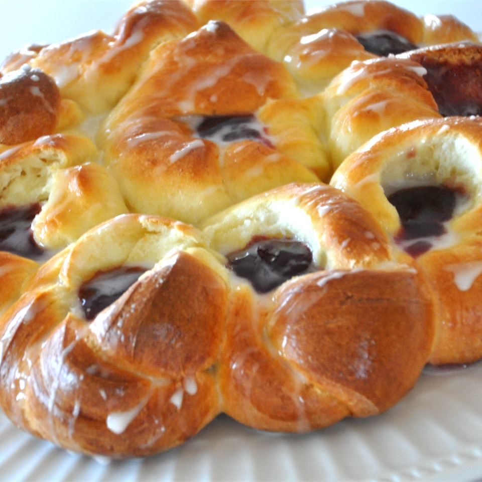

Blossom Bread

Description
You don't have to be a professional chef to make this pretty pull-apart bread. The yeast bread is wrapped into flower-like pieces, then baked. After that, fill the bread with your favorite jam or curd — this recipe calls for raspberry jam or lemon curd.
You don't have to be a professional chef to make this pretty pull-apart bread. The yeast bread is wrapped into flower-like pieces, then baked. After that, fill the bread with your favorite jam or curd — this recipe calls for raspberry jam or lemon curd.
Ingredients
- 6 cups all-purpose flour, or more if needed (divided)
- 1 tablespoon rapid rise yeast
- ½ cup white sugar
- ¼ teaspoon salt
- ½ cup unsalted butter
- 1 ¾ cups milk
- 3 eggs, beaten
- 1 lemon, zested and juiced
- 1 egg yolk
- 1 tablespoon water
- ½ cup seedless raspberry jam
- 1 cup confectioners' sugar
Steps
- In a large bowl, whisk together 4 cups of flour, the yeast, white sugar, and salt. In a saucepan over low heat, melt the unsalted butter with the milk until the mixture is warm, about 110 degrees F (43 degrees C). Gradually whisk about 1/3 of the butter-milk mixture into the beaten eggs, then return the egg mixture back into the remaining milk mixture. Stir the lemon zest into the liquid ingredients (set aside lemon juice for later). Pour the liquid ingredients into the flour mixture, and stir until thoroughly combined.
- Add enough flour to make a soft dough; turn the dough out onto a floured surface, and knead until smooth and elastic, 8 to 10 minutes. Place dough into an oiled bowl, and turn the dough around to cover surface lightly with oil. Cover the bowl with plastic wrap, and allow to rise in a warm place until doubled, about 1 hour. Punch down the dough, and allow to rest for 10 minutes.
- Divide the dough in half, and roll each half into a round ball. On a floured surface, roll out a ball into a 12-inch circle. Place a drinking glass, face down, into the center of the circle to prevent cutting the dough too far into the center. Cut the dough with a knife, from the edge of the dough circle to the rim of the glass, into quarters. Cut each quarter into 5 narrow wedge-shaped strips. (Center of the dough is uncut.) Remove the drinking glass. There are 20 narrow wedge-shaped strips surrounding the uncut center of the dough.
- Pick up two adjacent strips, and twist them together about 4 times; pinch the ends of the two pieces together at the top. Gently coil to form a rough flower shape. Arrange the round into the middle of the circle, where the drinking glass was.
- Pick up two more adjacent strips, and twist and pinch them as before; coil them into a rough round, and arrange the new petal next to the center rosette. Repeat with remaining 16 strips, twisting and pinching them in twos, coiling and arranging them into 8 more petals around the center rosette. Finished bread has 9 petals surrounding the center round. Repeat steps with the second ball of dough to make two breads.
- Grease a baking sheet, or line with parchment paper. Place the shaped breads onto the prepared baking sheet, reshaping them into rounds if needed; cover with a clean kitchen towel, and place into a warm spot to rise until almost doubled, 30 to 45 minutes.
- Preheat oven to 375 degrees F (190 degrees C). Beat the egg yolk with water in a small bowl, and brush the mixture over both the breads.
- Bake in the preheated oven until the breads have turned golden brown, about 25 minutes. Allow to cool.
- Use your fingers to gently deepen the indentations in the center of each petal, and fill each with about 1/2 to 1 teaspoon of raspberry jam. Mix the reserved lemon juice and confectioners' sugar in a bowl to form a glaze; drizzle the glaze in thin lines all over both the breads. Allow glaze to set. To serve, pull the petals apart.